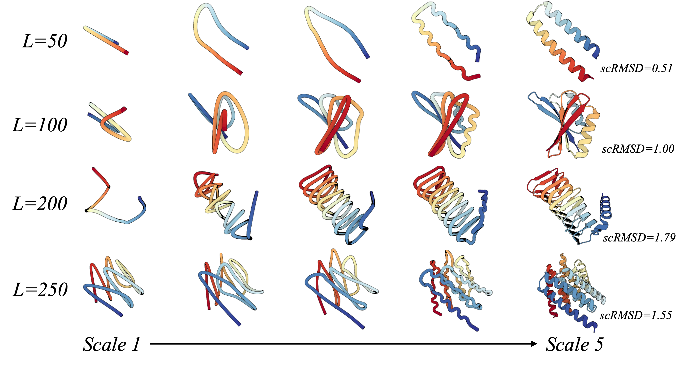
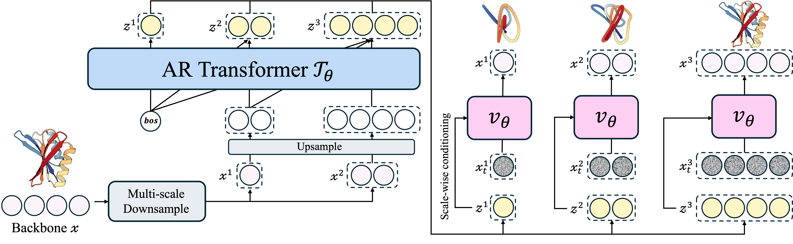
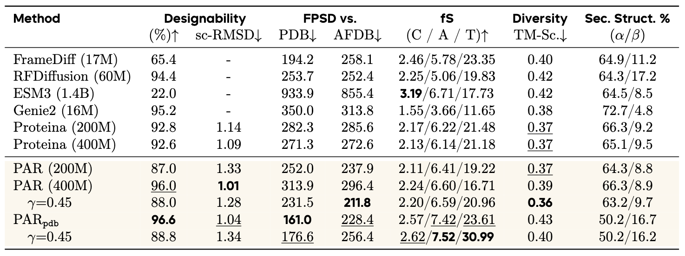
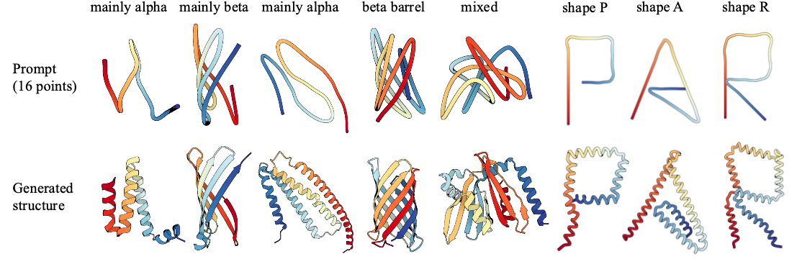
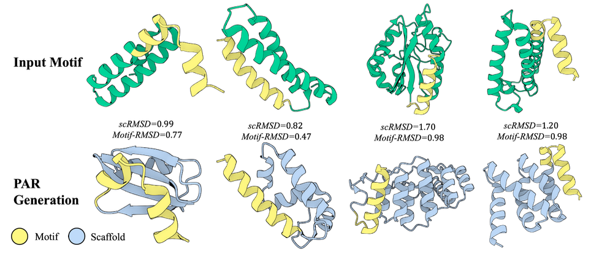
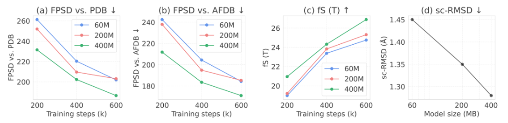
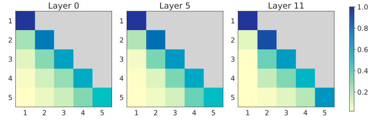
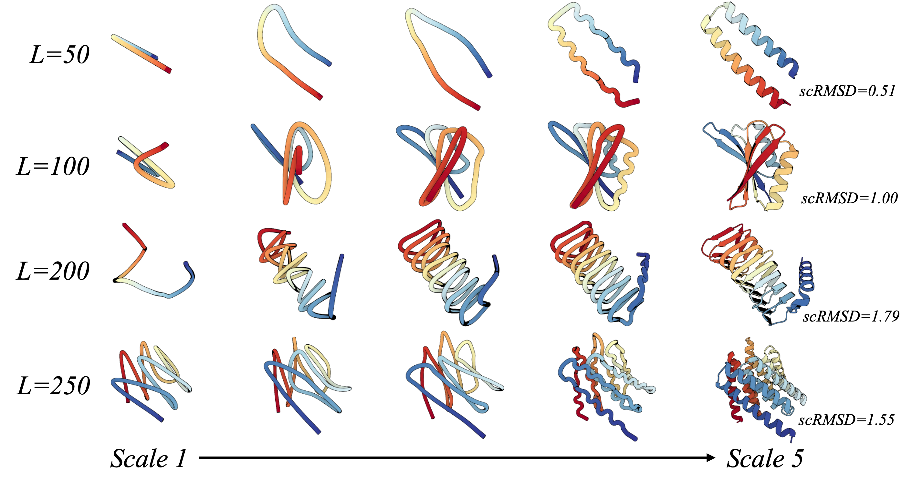
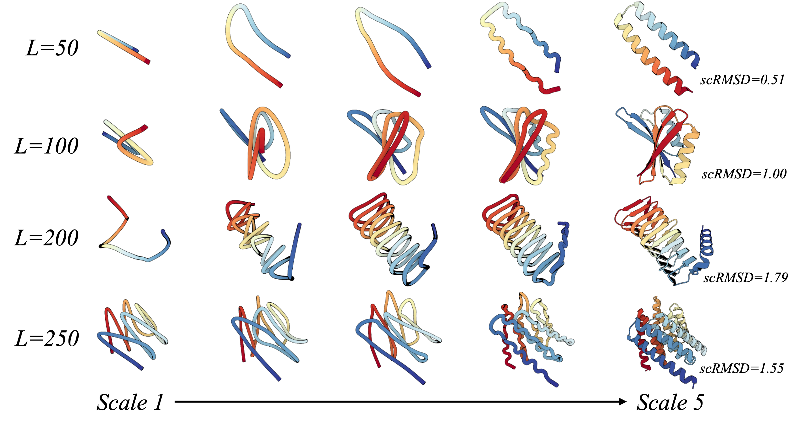

Protein Autoregressive Modeling: Taking initiative from the hierarchical nature of proteins, PAR generates backbones by forming a global topology and performing refinements, analogous to sculpting a statue into a masterpiece.

Abstract
We present Protein Autoregressive Modeling (PAR), the first multi-scale autoregressive framework
for protein backbone generation via coarse-to-fine next-scale prediction. Leveraging the hierarchical nature of proteins,
PAR generates structures in a sculpting-like process, forming a coarse topology and progressively refining structural
details across scales. PAR consists of three key components: multi-scale downsampling operations that represent
protein structures across multiple scales during training; an autoregressive transformer that encodes multi-scale
information and produces conditional embeddings to guide structure generation; and a flow-based backbone decoder
that generates backbone atoms conditioned on these embeddings. Autoregressive models suffer from exposure bias,
caused by the mismatch between training and generation procedures, which can substantially degrade structure generation
quality. PAR effectively alleviates this issue through noisy context learning and scheduled sampling,
enabling robust backbone generation. Notably, PAR exhibits strong zero-shot generalization, supporting
flexible human-prompted conditional generation and motif scaffolding without requiring fine-tuning. On
unconditional generation benchmarks, PAR effectively learns protein distributions, produces backbones of high design
quality, and exhibits favorable scaling behavior, establishing PAR as a promising framework for protein structure
generation.
Deep generative modeling of proteins has emerged as a way to design and model novel structures
with desired functions and properties.
A widely adopted approach is to directly model the distribution of three-dimensional protein
structures, mostly based on diffusion models and their variations (e.g., flow matching).
On the other hand, though autoregressive (AR) modeling showing striking scalability, and
zero-shot generalization in large language models,
AR modeling has received little attention in backbone modeling for 2 main reasons:
(i) Extending AR models to continuous data often relies on data discretization, which can
reduce structural fidelity and fine-grained details for proteins.
(ii) Protein residues exhibit strong bidirectional dependencies, while AR model usually
follows a unidirectional order, and thus limits the quality of previous attempts on autoregressive structure generation.
A natural question therefore arises:
Can we apply AR modeling to protein backbone design?
Figure 1: Multi-scale Generation with PAR.
Major Contributions
Our main contributions are summarized as follows:
We present PAR, the first multi-scale AR model for protein backbone generation that addresses key limitations of existing AR methods.
PAR comprises multi-scale downsampling, AR transformer, and a flow-based decoder, to directly model Cα atom, avoiding discretization loss.
We alleviate exposure bias through noisy context learning and scheduled sampling, effectively improving structure generation.
Our model shows an interpretable generation process that forms coarse backbone topology and refines it progressively.
Benchmarking results show that PAR effectively captures protein data distributions, achieving FPSD score of 161.0 against PDB dataset that further scale with training compute.
PAR exhibits efficient sampling and zero-shot generalization potential, reflecting the versatility of AR large language models.
Protein Autoregressive Modeling
During training, we downsample a backbone
\(\mathbf{x} \in \mathbb{R}^{L \times 3}\) into multi-scale representations
\(\{ \mathbf{x}^{1}, \dots, \mathbf{x}^{n} \}\).
The AR transformer performs next-scale prediction, producing conditional embeddings
\((\mathbf{z}^{1}, \dots, \mathbf{z}^{n})\) from
\(( \text{bos}, \dots, \mathbf{x}^{n-1} )\).
The shared flow-based decoder learns to denoise backbones
\(\mathbf{x}^{i}\) at each scale conditioned on
\(\mathbf{z}^{i}\). At inference, PAR autoregressively generates
\(\mathbf{x}^{i}\) until the final structure
\(\mathbf{x}\) is constructed.

Figure 2: Model Architecture of PAR.
PAR comprises the autoregressive (AR) transformer
\(\mathcal{T}_{\theta}\) (left) and the flow-based backbone decoder
\(\mathcal{v}_{\theta}\) (right).
Multi-Scale Protein Downsampling
We construct the multi-scale representations of protein structures via hierarchical downsampling to serve as
training context and targets for PAR.
The input structure \(\mathbf{x} \in \mathbb{R}^{L \times 3}\) is decomposed into multi-scale representations
\(\{ \mathbf{x}^{1}, \dots, \mathbf{x}^{n} \}\) through a scale configuration
\(\{ \texttt{size(1)}, \texttt{size(2)}, \dots, \texttt{size(n)} \}\), where
\(\text{Down}(\mathbf{x}, \texttt{size(i)}) \in \mathbb{R}^{\texttt{size(i)} \times 3}\) denotes a downsampling operation
that interpolates \(\mathbf{x}\) along the sequence dimension, producing
\(\texttt{size(i)}\) 3D centroids that provide a coarse structural layout.
Scale configuration can be defined in two ways:
By length: scales are chosen as hyperparameters, e.g.,
\(\mathbf{S} = \{64, 128, 256\}\).
If \(\mathbf{L} \in (\texttt{size(i)}, \texttt{size(i+1)}]\), the protein can be generated
with only \((i+1)\) autoregressive steps.
Empirically, defining scales by length yields slightly better results in modeling data distributions.
By ratio: scales are adaptively determined based on protein length, e.g.,
\(\mathbf{S} = \{L/4, L/2, L\}\).
This approach adjusts automatically for different protein lengths.
We adopt length-based scales as the default configuration.
This design enables training PAR with flexible scale configurations.
In the following sections, we describe how this hierarchy of representations is modeled
using the autoregressive transformer and backbone decoder.
Coarse-to-Fine Backbone Autoregressive Modeling
We propose to use an AR Transformer with diffusion/flow-based regression loss to enable modeling of Cα
atoms directly in continuous space. That is, we could write the likelihood as:
Autoregressive Transformer for Scale-Wise Conditioning
\(\mathcal{T}_{\theta}\)
To formulate the autoregressive order, we leverage the hierarchical nature of proteins,
where a protein structure spans multiple levels of representation from coarse tertiary topology
to the finest atomic coordinates. We adopt next-scale prediction to model the per-scale
distribution based on prior coarser scales, ensuring that the bidirectional dependencies
of residues are captured at each scale. We train our autoregressive model (Fig. 2, left),
a non-equivariant transformer 𝒯θ, to produce scale-wise conditioning embeddings
\(\mathbf{z}^{i}\) for scale i depending on prior scales
\(\mathbf{X^{\lt i}}=\{\mathbf{x}^{1}, \ldots, \mathbf{x}^{i-1}\}\):
where \(\mathbf{bos} \in \mathbb{R}^{\texttt{size(1)} \times 3}\) is a learnable embedding,
and \(\mathrm{Up}(\mathbf{x}^{i-1}, \texttt{size(i)})\) interpolates
\(\mathbf{x}^{i-1}\) to \(\texttt{size(i)}\) 3D points.
All inputs are concatenated along the sequence dimension before being fed into
\(\mathcal{T}_{\theta}\).
The embedding \(\mathbf{z}^{i}\) is then used to condition the flow-matching decoder
to predict the backbone coordinates \(\mathbf{x}^{i}\).
We enable PAR to directly model Cα positions
\(\mathbf{x}\), wherein
\({p}_{\theta}(\mathbf{x} \mid \mathbf{z}^{i})\) is parameterized by an atomic decoder
\(\mathcal{v}_{\theta}\) with flow matching, which maps a standard normal distribution
to the target data distribution. We condition \(\mathcal{v}_{\theta}\) with scale-wise
embeddings \(\mathbf{z}^{i}\) predicted by the AR transformer
\(\mathcal{T}_{\theta}\) at each scale \(i\) (Fig. 2, right).
During training, we sample noise
\(\boldsymbol{\varepsilon}^{i} \sim \mathcal{N}(\mathbf{0}, \mathbf{I})\)
and a time variable \(t^{i} \in [0,1]\), and compute the interpolated sample as
\(\mathbf{x}_{t^{i}}^{i} = t^{i} \cdot \mathbf{x}^{i} + (1 - t^{i}) \cdot \boldsymbol{\varepsilon}^{i}\).
As such, we can jointly train \(\mathcal{v}_{\theta}\) and
\(\mathcal{T}_{\theta}\) with a flow-matching (FM) objective.
where \({p}_{D}(\mathbf{x})\) denotes the training data distribution and
p(t) denotes the \(t\)-sampling distribution in training.
The conditioning embedding \(\mathbf{z}^{i}\) is injected into the atomic decoder network
\(\mathcal{v}_{\theta}\) through adaptive layer norms.
Mitigating Exposure Bias
Training AR models typically uses teacher forcing, where ground-truth data are fed as
context to stabilize learning.
However, during inference the model is conditioned on its own predictions, creating a
training-inference mismatch
known as exposure bias. Errors can then accumulate across autoregressive steps,
degrading output quality.
Our preliminary study shows that teacher forcing greatly reduces the designability of
generated structures.
To mitigate this, we adapt Noisy Context Learning (NCL) and Scheduled
Sampling (SS), techniques from language and
image AR modeling, for PAR.
Inference
At inference, the autoregressive transformer first produces
\(\mathbf{z}^{1}\) at the coarsest scale, which conditions the flow-matching decoder
\(\mathcal{v}_{\theta}\) to generate
\(\mathbf{x}^{1}\) either via ODE or SDE sampling.
We upsample \(\mathbf{x}^{1}\) using
\(\texttt{Up}(\mathbf{x}^{1}, \texttt{size(2)})\) and send it back into the
autoregressive transformer to predict the next-scale embedding
\(\mathbf{z}^{2}\).
This coarse-to-fine process iterates \(n\) times until the flow-matching model generates the full-resolution backbone
\(\mathbf{x}\).
KV cache is applied throughout the autoregressive process for efficiency.
Leveraging the learned flow network
\(\mathcal{v}_{\theta}\), sampling can be performed at each scale through the ordinary differential equation (ODE):
\(\mathrm{d} \mathbf{x}_{t} = \mathcal{v}_{\theta}(\mathbf{x}_{t}, t)\, \mathrm{d}t\),
with the scale superscript \(i\) omitted for simplicity.
Moreover, we can define the stochastic differential equation (SDE) for sampling:
$$
d \mathbf{x}_t
= v_{\theta}(\mathbf{x}_t, t)\, dt
+ g(t)\, s_{\theta}(\mathbf{x}_t, t)\, dt
+ \sqrt{2 g(t)\, \gamma}\, d \mathcal{W}_t
$$
where \(g(t)\) is a time-dependent scaling function for the score function
\(s_{\theta}(\mathbf{x}_t, t)\), and the noise term \(\gamma\) is a noise scaling parameter,
and \(\mathcal{W}_t\) is a standard Wiener process.
The score function, defined as the gradient of the log-probability of the noisy data
distribution at time \(t\), could be computed as:
We compare PAR with other baselines on unconditional backbone generation benchmark as shown in Table 1.
To better reflect the goal of unconditional protein generation as modeling the full data distribution, we adopt FPSD, which jointly measures quality and diversity by comparing generated and reference distributions, analogous to FID in image generation.
As shown in Table 1, PAR generates samples that closely match the reference data distribution and maintains competitive designability.
On FPSD, PAR achieves scores of 211.8 against AFDB and 231.5 against PDB.
By reducing the noise scaling parameter \(\gamma\) from 0.45 to 0.3 in SDE sampling, we reduce sampling stochasticity and further improve sample quality, improving the designability from \(88.0\%\) to \(96.0\%\).
After fine-tuning, PAR achieved \(96.6\%\) designability and 161.0 FPSD against the PDB, highlighting its superior distributional fidelity compared to pure diffusion-based baselines.
Table 1:Unconditional backbone generation performance.
We follow FPSD and fS to evaluate the model's ability to capture the data distribution.
PARpdb denotes the 400M model finetuned on the PDB subset.

Zero-Shot Prompted Generation
Proteins possess hierarchical and complex structures, which makes it challenging to directly specify
a target shape and design proteins accordingly. By leveraging PAR’s coarse-to-fine generation,
a simple prompt (e.g., 16 points) can specify a protein’s coarse layout, from which the model generates
the complete structure as shown in Fig. 3.
In particular, we first obtain a 16-point input prompt either by downsampling a real protein structure
from the test set or by specifying the points manually (the top row in Fig. 3). Using a 5-scale PAR
(S = {16, 32, 64, 128, 256}), we initialize the first-scale prediction with the 16-point prompt
and autoregressively upsample until the full protein structure is generated, as illustrated in the bottom row of Fig. 3.
📌 Following this process, PAR can generate a new structure that preserves the coarse structural layout
(first five examples), and explore entirely novel structures (last three examples).

Figure 3: Backbone generation with human prompt.
Given a small number of points (e.g., 16) as prompt, PAR can generate protein backbones that adhere
to the global arrangements specified by these points, without any finetuning.
For visualization, input points are interpolated to match the length of the generated structure.
Zero-Shot Motif Scaffolding
Besides the point-based layout, PAR can preserve finer-grained prompts like atomic coordinates.
Fig. 4 highlights the zero-shot motif scaffolding capabilities of PAR.
Using a 5-scale PAR, we downsample a raw protein structure into five scales and teacher-force the
ground-truth motif coordinates at each scale before propagating into the next scale.
To avoid clashes or discontinuities, we superimpose the ground-truth motif residues and the generated motif segments before replacement.
📌 With no fine-tuning and no conditioning, PAR generates plausible scaffolds that preserve motif structures with high fidelity.
This stands in contrast to diffusion or flow-based frameworks, which typically require fine-tuning on additional conditions such as masks or motif coordinates, or rely on decomposition strategies.
Moreover, the generated scaffolds differ substantially from the input structure, showing that PAR generates structurally diverse scaffolds rather than merely copying.
For example, the leftmost example in Fig. 4 preserves the yellow motif helix while introducing new secondary structure elements such as β-sheet and loops, in contrast to the original helices.
We provide benchmarking results in the appendix.

Figure 4: Zero-shot motif scaffolding.
Given a motif structure, PAR can generate diverse, plausible scaffold structures that accurately preserve
the motif via teacher-forcing the motif coordinates at each scale, without additional conditioning or fine-tuning.
Scaling Effects of PAR
PAR demonstrates favorable behavior when scaling both model size and training duration,
effectively improving its ability to capture the protein data distribution with FPSD scores of
187 against PDB and 170 against AFDB (first two columns in Fig. 5).
Further, the fS scores, which reflect quality and diversity, increase with larger model sizes
and greater computational budgets.
Meanwhile, we empirically observe that scaling the autoregressive transformer has minimal impacts
on the evaluation results.
This allows us to reduce computational costs and prioritize increasing the backbone decoder's model
capacity that effectively improves generation quality.
We provide more discussion on varying model sizes in the appendix.

Figure 5: Scaling effects of PAR.
Performance of four metrics over varying training steps and model sizes:
(a) FPSD vs. PDB,
(b) FPSD vs. AFDB,
(c) fS(T),
(d) sc-RMSD.
Efficient Sampling
While Tab. 3 reports results using a uniform number of sampling steps across scales,
the multi-scale formulation of PAR actually offers advantages in sampling efficiency.
More specifically, (1) sampling at the coarser scale (e.g., first scale) is more efficient than
sampling at finer scales (e.g., 2nd scale) due to shorter sequence length;
(2) we can use fewer sampling steps at finer scales than coarser scales.
📌 Efficient sampling at finer scales: As shown in Tab. 4, by using SDE sampling only at the first scale,
and switching to ODE sampling for the remaining scales, PAR could dramatically reduce
the diffusion steps from 400 to 2 steps at the last two scales without harming designability (97%),
yielding a 2× inference speedup.
This is possible because a high-quality coarse topology places
the model near high-density regions, enabling efficient refinement with ODE sampling.
📌 2.5× inference speedup versus single-scale baselines. Compared to the single-scale 400-step baseline, PAR achieves 1.96× and 2.5× sampling speedup
at length 150 and 200, respectively.
This improvement is driven by speeding up the final scales, where the longer sequence lengths
cause computational costs to grow quadratically in transformer architectures.
Moreover, the computational costs remain constant at the first scale because it has a fixed size 64,
even when generating longer sequences.
For single-scale models, naively reducing the SDE sampling
steps significantly harms designability.
📌 Orchestrating SDE and ODE sampling.
Crucially, SDE sampling at the first scale is necessary for establishing a reliable global topology,
given that ODE-only sampling exhibits poor designability.
Table 2:Performance of different sampling methods and steps.
Combining SDE and ODE sampling across scales yields a
\(2.5\times\) inference speedup compared to the single-scale
400-step baseline, shown in the first and the last row.
We generate 100 samples at each length.
Sampling
Steps
Length 150
Length 200
Time (s)
Design. (%)
Time (s)
Design. (%)
Proteina (SDE)
0/0/400
131
97%
170
92%
0/0/200
67
89%
86
80%
All SDE
400/400/400
312
97%
351
94%
400/400/2
184
0%
–
–
All ODE
400/400/400
312
28%
–
–
S/S/O
400/400/400
312
98%
–
–
400/400/2
184
99%
186
91%
S/O/O
400/400/400
312
96%
–
–
400/2/2
67
97%
68
94%
Multi-Scale Formulation
We ablate the effect of defining scale by length versus ratio.
Table 3 shows that under comparable levels of upsampling ratio
(\(\{64, 128, 256\}\) and \(\{L/4, L/2, L\}\)),
the by-length strategy outperforms by-ratio.
Meanwhile, PAR obtains better designability and FPSD when increasing from two scales to three scales.
Beyond this point, increasing the scale configurations to four and five scales results in degraded designability,
potentially due to error accumulation and exposure bias. These results support our choice of adopting the 3-scale PAR as the default.
All results are obtained using the 60M model.
Table 3:Multi-scale formulation.
We ablate different strategies for scale configuration in downsampling using a smaller PAR (60M).
Define scale
Designability (% ↑)
sc-RMSD ↓
FPSD vs.
fS (C / A / T ↑)
–
–
PDB ↓
AFDB ↓
{64, 256}
83.0
1.38
282.85
274.32
2.14 / 6.58 / 20.66
{64, 128, 256}
85.0
1.39
279.63
267.35
2.15 / 6.52 / 20.35
{64, 128, 192, 256}
77.8
1.55
296.70
282.69
2.05 / 6.04 / 18.69
{64, 96, 128, 192, 256}
81.0
1.51
276.00
263.58
2.17 / 6.31 / 20.65
{L/4, L/2, L}
86.4
1.49
310.64
298.30
2.00 / 5.87 / 18.91
Mitigating Exposure Bias
Table 4 shows that noisy context learning
effectively improves the sc-RMSD of the generated structure from 2.20 to 1.58, and reduces FPSD against
AFDB to 23.69 when using ODE sampling. The designability further improved to 1.48 along with scheduled sampling,
which makes the training process more aligned with the inference scenario. Results are obtained
with 60M PAR trained for 100K steps.
Table 4:Mitigating exposure bias for PAR.
Method
sc-RMSD ↓
FPSD vs. (PDB / AFDB) ↓
fS (C / A / T ↑)
Teacher Forcing
2.20
99.66 / 37.64
2.53 / 5.56 / 29.67
+ NCL
1.58
89.70 / 23.69
2.54 / 5.85 / 28.37
+ NCL & SS
1.48
90.66 / 24.59
2.54 / 5.84 / 28.77
Interpreting Multi-Scale PAR
We visualize the attention maps of the autoregressive transformer at each scale (Fig. 6).
We average the attention scores within each scale, normalize them such that the scores across scales sum to 1,
and average them over 50 test samples to obtain the scale-level attention distribution during inference.
We summarize three key observations:
(i) Most scales barely attend to the first scale, since the input to this scale, a bos token, carries little structural signal.
(ii) Each scale primarily attends to the previous scale, which typically contains richer contextual and structural information.
(iii) Despite focusing most heavily on the current scale, the model still retains non-negligible attention to earlier scales.
📌 This indicates that PAR effectively integrates information across multiple scales and maintains structural consistency during generation.

Figure 6: Visualization of the average attention scores in PAR autoregressive transformer over 5 scales,
obtained from samples with lengths in (128, 256).
We provide attention map visualization for shorter proteins in §C.3.
Conclusion
PAR is the first multi-scale autoregressive model for protein backbone generation, offering a general framework that includes flow-based methods as a special case. PAR addressed limitations of standard autoregressive models, such as unidirectional dependency, discretization, and exposure bias. Our method robustly models structures over multiple granularities and in turn enables strong zero-shot generalization. This capability includes coarse-prompted conditional generation using points (e.g., 16 points) as structural layout and finer-grained controls such as atomic-coordinate-based motif scaffolding. For unconditional backbone generation, PAR exhibits powerful distributional fidelity and generation quality. The analysis of scale-level attention map provides additional insights into how the multi-scale formulation operates.
We hope that PAR unlocks the potential of autoregressive modeling for protein design. Some promising open directions include:
(1) Conformational dynamics modeling. PAR can, in principle, perform zero-shot modeling of conformational distributions: we downsample a structure and upsample it with PAR to mimic local molecular dynamics. We leave this exciting application for future research.
(2) All-atom modeling. This work focuses on backbone Cα atoms to prioritize autoregressive design, but it is natural to extend to full-atom representations. The multi-scale framework offers an advantage for flexible zero-shot prompt-based all-atom designs.
BibTeX
@article{par,
title={Protein Autoregressive Modeling via Multiscale Structure Generation},
}
 
